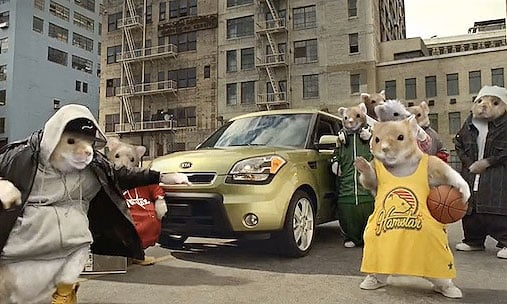

Evan Hampster
@Evan.hamppp
Feb 17
Hey all, I am a hamster, who likes spelling it with a p. I made a commercial.

Hamster made a commercial for the first time. See it exclusively on Netfl...
Hamsters for the first time have evolved since the introduction of the hamster wheel to making films. They credit the fact that they were unable to fall off the hamster wheels as children for their success. Read the exclusive interview here.